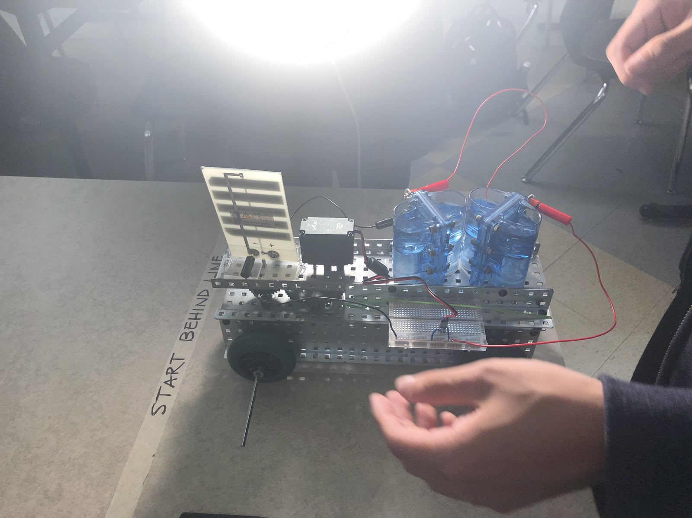
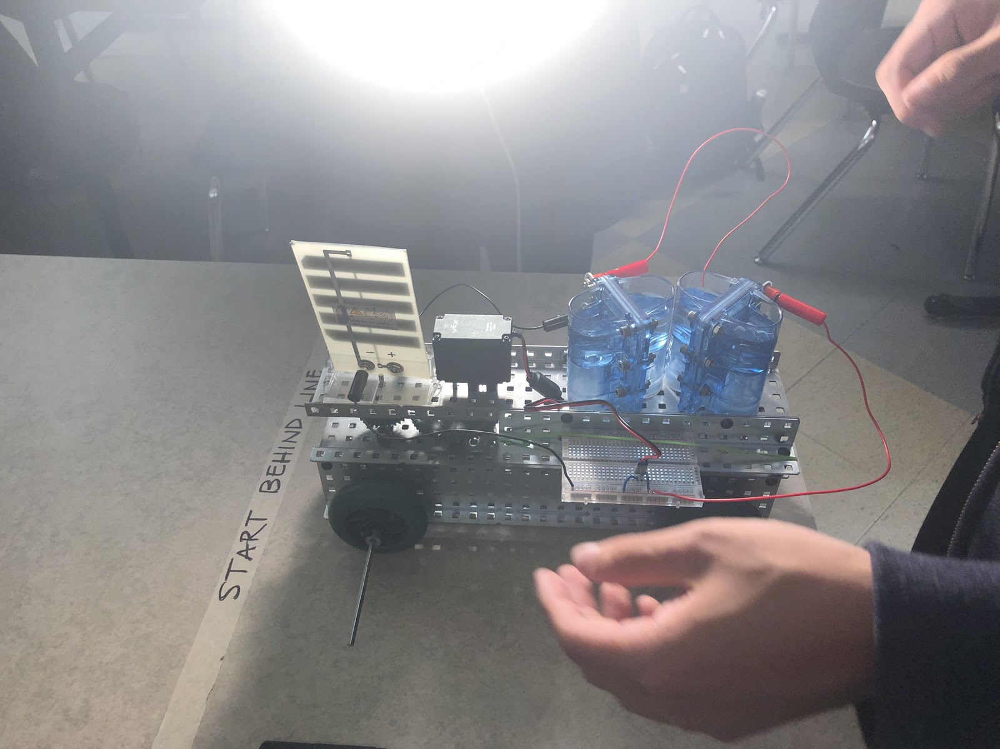

Hydrogen Solar Car
November 2018, Principles of Engineering
Click here to see our Project Notebook!
 

The objective of this project was to make an energy and global friendly car for Tesla. My partners Mingye Yang, Suchay Dharnidharka, and I made a solar and hydrogen cell powered car that we believe is the answer to Tesla's problem. We also wanted a car that would be fastest of all our competitors. I assisted with constructing the car and breadboard overall, sometimes helping with the documentation at times. I believe that I helped out my group with areas they needed, and I would always whatever job I had to do done.